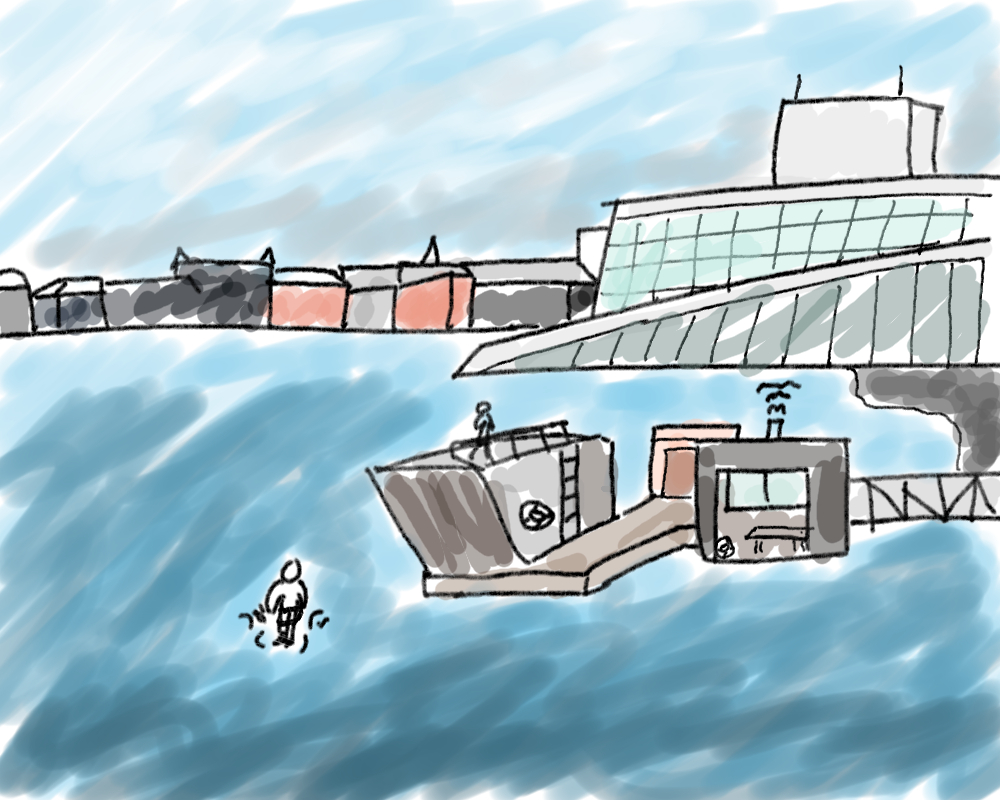

Hva er havnepromenaden?

Havnepromenaden skal innen 2030 bli en 9 kilometer lang promenade langs havet, som skal tilby ulike tilbud for alle brukergrupper, uansett årstid. Promenaden er markert med oransje fyrtårn som veileder deg til hvor neste attraksjon er. På tårnene finner du kunst og tavler som inneholder spennende fakta om området rundt. På den 9 kilometer lange promenaden finner du blant annet Sørenga, arkitektursafari i Bjørvika, saunaer og kunst på Langkaia.